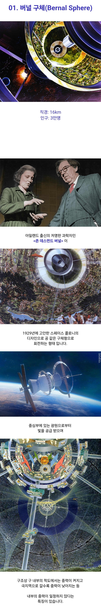
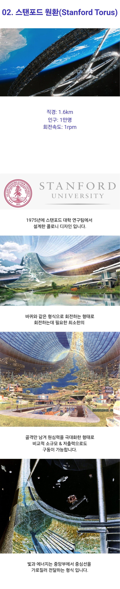
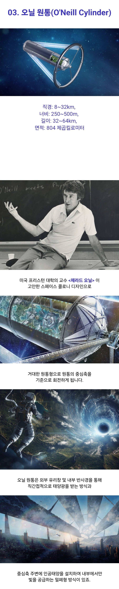

https://m.fmkorea.com/index.php?document_srl=5817316454&cpage=1
원본



https://m.fmkorea.com/index.php?document_srl=5817316454&cpage=1
원본



저런 오닐실린더 수십만개가 태양근처를 덮는 다이슨 스웜이 형성될거라는 미래도 있음
이런거 개좋다
상상력을 더함
이런 그림들을 옛날엔 많이 본 거 같은데 미래 상상짤
우주에서 단 몇달만 지내도 골다공증, 우주멀미, 정신착란 같은 온갖 질병이 생김.
지구가 멸망해도 걍 지구에서 죽는게 나음.
그걸 해결하려고 저걸 회전시키는 이유가 중력을 만들려고 그러는거임
그래서 저게 다 장소도 넓히고 중력도 만드는거잖아

어떻게 리스크랍시고 든 세개가 정확하게 인공중력으로 해결되는 것들이냐
이정도면 노렸나
저런 콜로니들을 우주 쓰레기에서 보호 하기위해 물같은걸로 한겹 감싸거나 할수는 없나?
그 역할을 하는게 행성에서는 엄청 두꺼운 대기층과 자기장인데 일정 질량 미만의 데브리가 행성으로 낙하하는동안 대기 마찰로 타버리고 우주 입자 태양풍 같은건 오존층이나 자기장이 막아주지
일반 행성이면 자기장인건 아는데 사람 기술력으로 그게 안되니 물 같은 아 쓰다보니 깨달았다.
물은 온도때문에 안되는구나
자기장 대기층 이런거 아니면 어렵다고 말하려고 했어
아하아하
프로토스쉴드래
ㅋㅋㅋㅋㅋㅋㅋ
엔타로아둔!
파피용!
링월드 어디감
파먹을게 있어야 식민지도 건설할텐데ㅋㅋㅋ
데브리가 엄청 늘어나고 있다던데 데브리 한방이면 끝나는건가
플라네테스 애니만 봐도... 카우보이 비밥도 나사하나에 우주선 박살났고.
최근엔 그라비티 보고나면 현실성 너무 없게 버임.